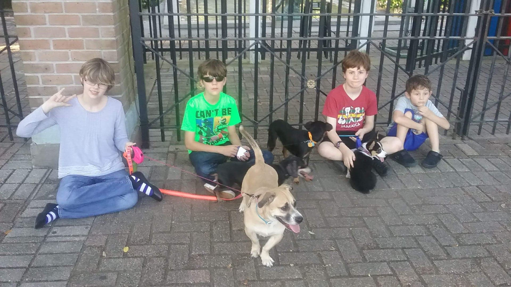
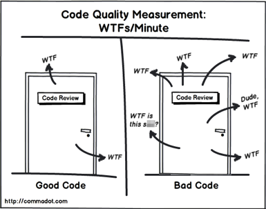
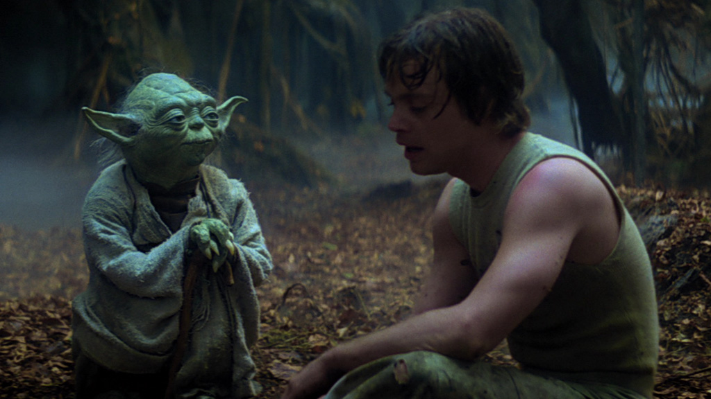

What Makes a
Great Developer?
Good Morning!
I'm Matt. Or @elazar if you're on Twitter.
Nice to meet you. Thanks for attending.
Questions or Feedback?
- Ask questions during or after the talk
- Contact me: matthewturland.com/contact
- Leave feedback: joind.in/talk/6b57c
Slides
Question of the Hour
Want to Be
a Great Developer?
Want to Know
Great Developers?
Want to Hire
Great Developers?
Want to Create
Great Developers?
What Makes a
Developer Great?

No Single / Simple Answer
We Must Find Our Own
PHP Women

PHP Mentoring

Critical Skills
What qualities must a junior developer have?
Desire to Learn
Desire to Improve
Capacity for Patience
Advancement
What qualities must a senior developer have?
It's Not About Code

I'm realizing more and more that being a good engineer isn't about pounding keys. I like that a lot.
— Graham Daniels (@greydnls)
November 20, 2015
"Less talk, more code." If you think that's what software is about... you have a lot to learn.
— Sarah Mei (@sarahmei)
March 30, 2016
So much of what we do as developers isn’t just code. Let’s work on being more holistic with our approach to dev as human.
— Ben Edmunds (@benedmunds)
August 31, 2015
- holistic
- adj. characterized by comprehension of the parts of something as intimately interconnected
It's Not About Perfection
“No program you write will ever be perfect” @Crell #PNWPHP
— Andrew Woods (@awoods)
September 12, 2015
Perfect code doesn't make great software. Useful code does. Here's to everyone trying to make useful code that doesn't suck.
— Luke Stokes (@lukestokes)
November 11, 2015
"Alyosha's Law: software is never 'done' - only occasionally shipped, and then eventually abandoned."
— Mark Nijhof (@abt_programming)
February 20, 2015
There are no solutions, only tradeoffs.
— Paul Jones (@pmjones)
February 3, 2014
Listen
"Most people do not listen with the intent to understand; they listen with the intent to reply." ~Stephen R. Covey
— Charlie Ambler (@dailyzen)
October 31, 2015
I find I am in the most fascinating conversations when I don’t try to talk and just listen.
— Cal Evans (@CalEvans)
November 17, 2015
Ask not what your software can do for your users; ask what your users want to do with your software.
— Eric Wastl (@ericwastl)
October 8, 2015
Communicate
OH "The secret to open source is not the best code, it's the best communication." @github vesea
— Jenny Wong (@miss_jwo)
January 25, 2016
My 6 yo asked what programming was like. I told him it was like making Lego out of words.
— Paul Graham (@paulg)
June 11, 2015
Explain It To a Kid?
Picard management tip: Improve your vocabulary by reading books. Words can be your most powerful tools.
— Joe Sondow (@PicardTips)
May 26, 2016
I don't know why anyone thinks that programming doesn't require social skills.
It's mostly social skills.— Paddy Foran (@paddycarver)
September 17, 2015
F*** programming puzzles. I want to know if an interview candidate can file a bug report worth a s***.
— Jonathan Simms (@slyphon)
September 11, 2015
If you leave a todo in code, don't only describe what to do, but also why you didn't do it.
— Tim de Pater (@trafex)
June 19, 2015
Seriously consider writing your library's documentation first. Trying to explain how to use code is instrumental in creating a decent API.
— Will Bond (@wbond)
September 16, 2015
Practice Empathy
My biggest take away from #phptek is that, as a community, we are starting to think about each other as people. That’s pretty cool.
— Jeff Carouth (@jcarouth)
May 23, 2015
- sonder
- n. the profound feeling of realizing that everyone, including strangers passed in the street, has a life as complex as one's own they are constantly living despite one's personal lack of awareness of it
Behind every great programmer is a self-conscious person making it all up as they go, desperately hoping not to be found out.
— Justin Searls (@searls)
January 7, 2016
If someone disagrees with you, you don’t have to change your mind to empathize with them. Empathy is not the same as endorsement.
— Ed Finkler (@funkatron)
June 11, 2015
- empathy
- n. the ability to understand and share another's feelings
- sympathy
- n. feelings of pity and sorrow for someone else's misfortune
Depression attacks us by making us feel alone, unworthy, and unable to reach out for help. Fight back. #WeAreNotAlone #HackTheStigma
— Matthew Turland (@elazar)
November 18, 2014

Open Sourcing
Mental Illness
Being a good senior dev is easy:
- Don't tell; ask
- Don't rewrite; pair and refactor
- Don't sneer; encourage
- Be kind.
— Ricardo Gladwell (@rgladwell)
October 24, 2015
Practice Humility
Picard diplomacy tip: The greatest threat to lasting mutual respect is egocentrism. It may never leave you, but resist it at every turn.
— Joe Sondow (@PicardTips)
May 16, 2016
Tech conferences are always humbling and motivating. Great look at how much I don't know and prod to get learning.
— Jessica Rose (@jesslynnrose)
January 28, 2016
Separate Identity
From Work
Code isn't personal, people. You are not your code.
— Yitzchok Willroth (@coderabbi)
October 27, 2015
"Code is not a permanent representation of your intelligence." -@IrisClasson #scna
— Sarah Mei (@sarahmei)
November 6, 2015
You are not your job. You are how you treat people.
— Sarah Kendzior (@sarahkendzior)
April 7, 2014
Leave
Better Than You Find
As a developer your job is to systematically reduce the number of facepalms per segment of read code.
— Jeff Carouth (@jcarouth)
November 11, 2015
The best programmers I've ever met had an odd balance of an ability to cope with current tech and a fervent unwillingness to do so.
— Michael Fogus (@fogus)
June 11, 2015
Be a good community member. Say good things about people in public, not bad things. Let's empower each other and not bring each other down.
— Tessa Mero (@TessaMero)
November 16, 2015
Be Curious
"To be a good software engineer requires a commitment to life-long learning." - @ieatkillerbees #phptek
— Nomad PHP (@nomadphp)
May 26, 2016
I have been programming for 18 years and I still learn new things everyday. Reason I enjoy my work. Never. Stop. Learning.
— Jeremy Quinton (@jeremyquinton)
June 11, 2015
Follow your curiosity. Don't worry if it is not related to your work, integration of new ideas from distant spheres may yield new fruits.
— Carin Meier (@gigasquid)
September 11, 2015
Dream a little. It's free, anything goes, and may even result in something real.
— Adam Culp (@adamculp)
August 3, 2015
Share Your Knowledge
- Speak at conferences
- Help others submit to conferences
- Volunteer to mentor others
- Contribute to bug reports
- Write articles for php[architect], SitePoint, etc.
- Start a blog
Further Resources
Going Pro
A talk by Cal Evans
Professional Development, Professional Developers
A talk by Steve Grunwell
How to Be
a Great Developer
A talk by Ed Finkler
The Art of Programming
A talk by Erika Heidi
Empathy Gives You Superpowers
A talk by Matt Stauffer
Silence is Deadly
A talk by Amanda Folson
What Makes a
Great Developer?
What Makes a
Great Developer Person?
That's All, Folks
- Questions? Comments? Discussion?
- stacksports.com
- matthewturland.com for slides
- E-mail: me@matthewturland.com
- Twitter: @elazar
- GitHub: elazar
- Freenode: Elazar
Feedback
Please rate my talk!
Also, check out the joind.in mobile apps!